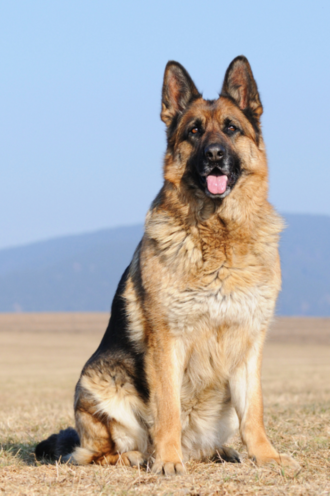

Bogart
Sex: Male
Age : Adult
Breed : Pitbull
Meet Bogart! G'day to you. When I am feeling like a proper gentleman, you may refer to me as Bogart...but when my bow tie is off I am just good ol' Boogs. I don't like to live in the past, but my past was ruff for sure. These days, I just want to give all my attention to my hoomans and want all my hoomans attention for myself.
May
Sex: Female
Age : Adult
Breed : German Shepherd
Meet May! Are you ready for the best year of your life? So is MAY!. This young girl is facing a looming deadline of about 12-18 months so we promised her it would be the best darn 12-18 months any pup has ever had! Despite the sad prognosis, May has a cushy quality of life and we think this easy going girl would be a treasure to anyone looking to spare a little love for her.